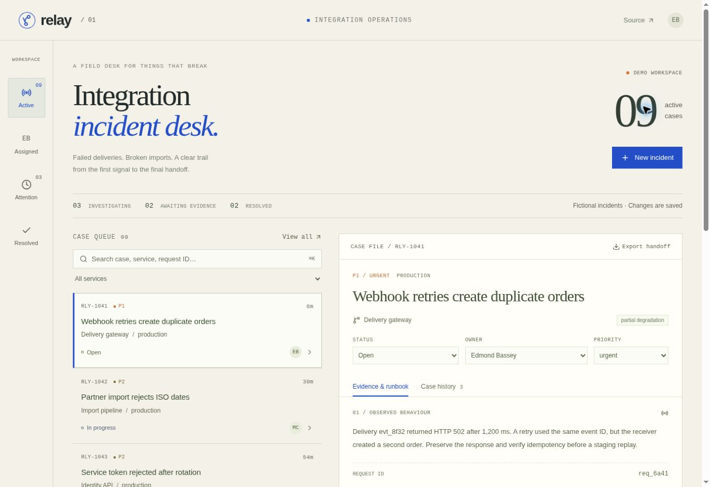

01 / RELAY
A field desk
A field desk
for broken
integrations.
Failed webhooks. Rejected imports. A request that times out somewhere between services. Relay turns the investigation into a case file someone else can pick up.
- 01Runbooks matched to the incident type
- 02Saved checks and a complete case history
- 03Version checks that protect concurrent edits
TYPESCRIPT / REACT / SQLITE / REST API
RELAY / INTEGRATION INCIDENT DESKWORKING DEMO

THE DETAIL
A failed update cannot leave behind a misleading history entry.